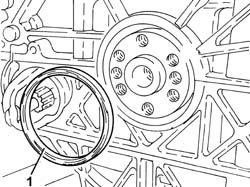
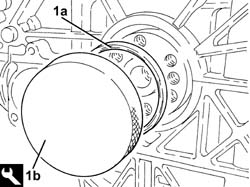
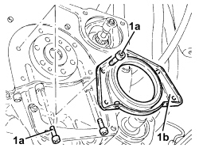
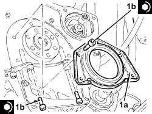
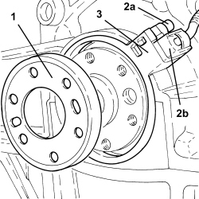
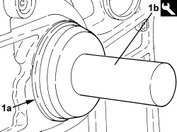

1020D38 FLYWHEEL SIDE OIL SEAL - REPLACE
- Path
- Procedures > 10 ENGINE > 1020 CRANKCASE SUMP AND COVERS > 1020D OIL SEALS ON CRANKSHAFT > 1020D38 FLYWHEEL SIDE OIL SEAL - REPLACE
- Kind
- repair procedure (removal / refitting; the operation number is the code)
- Applies to
- engines: 1.8, 2.2, 2.4 JTD 20v; all production periods
- Interactive page
- https://sloeber94.github.io/elrnDB-fCrm/en/#/194000258
Applies to: engines: 2.2; all production periods
 Removing
Removing
 Refitting
RefittingOp. 4450B12 FRONT WHEELS (TWO) - R+R
Op. 7055B66 ENGINE COMPARTMENT DUST COVER IN RIGHT FRONT WHEEL ARCH - R.R.
Op. 7055B91 RIGHT FRONT WHEEL ARCH LINER - R.R.
Op. 7055B90 LEFT FRONT WHEEL ARCH LINER - R.R.
Op. 1080B95 REAR LAMBDA SENSOR TO CATALYTIC CONVERTER - R.R
Op. 1076B18 RIGID SECTION OF EXHAUST PIPE BETWEEN CATALYTIC CONVERTER AND SILENCER - R + R
Op. 7055A43 CENTRE FRONT GRILLE - R.R.
Op. 4410D10 FRONT SUSPENSION FRAME - R+R
Op. 5530B52 BATTERY SUPPORT/DRIP TRAY - R.R
Op. 7055B54 UNDER ENGINE PROTECTION/GUARD - R.R.
Op. 2110A10 MANUAL GEARBOX AND DIFFERENTIAL - R + R
Op. 1810A24 CLUTCH - R + R WITH GEARBOX REMOVED
Op. 1024B22 ENGINE FLYWHEEL - R.R WITH CLUTCH REMOVED FOR VERSIONS WITH MANUAL GEARBOX
1. Release and remove the flywheel side oil seal.

Applies to: engines: 2.2; all production periods
Refitting
Removing1. Place a new flywheel side oil seal (1a) in the housing using the tool (1b).
Tool | Description | Function | Validity |
|---|---|---|---|
1860806000 | Fitting tool | Fitting flywheel side oil seal | 2.2 |

Applies to: engines: 2.2; all production periods
Op. 1024B22 ENGINE FLYWHEEL - R.R WITH CLUTCH REMOVED FOR VERSIONS WITH MANUAL GEARBOX
Op. 1810A24 CLUTCH - R + R WITH GEARBOX REMOVED
Op. 2110A10 MANUAL GEARBOX AND DIFFERENTIAL - R + R
Op. 7055B54 UNDER ENGINE PROTECTION/GUARD - R.R.
Op. 5530B52 BATTERY SUPPORT/DRIP TRAY - R.R
Op. 4410D10 FRONT SUSPENSION FRAME - R+R
Op. 7055A43 CENTRE FRONT GRILLE - R.R.
Op. 1076B18 RIGID SECTION OF EXHAUST PIPE BETWEEN CATALYTIC CONVERTER AND SILENCER - R + R
Op. 1080B95 REAR LAMBDA SENSOR TO CATALYTIC CONVERTER - R.R
Op. 7055B90 LEFT FRONT WHEEL ARCH LINER - R.R.
Op. 7055B91 RIGHT FRONT WHEEL ARCH LINER - R.R.
Op. 7055B66 ENGINE COMPARTMENT DUST COVER IN RIGHT FRONT WHEEL ARCH - R.R.
Op. 4450B12 FRONT WHEELS (TWO) - R+R
Op. 0010T64 BRAKE AND/OR CLUTCH FLUID CHECK LEVEL AND TOP UP AS NECESSARY
Op. 0010T67 HYDRAULIC CLUTCH SYSTEM - BLEED AIR
Op. 0010T41 MANUAL GEARBOX OIL CHECK LEVEL AND TOP UP IF NECESSARY
Applies to: engines: 2.4 JTD 20v; all production periods
Removing
Refitting- On this version it is not possible to remove/refit the flywheel side oil on the car.
To perform this operation, remove/refit the power unit
Op. 1004B14 POWER UNIT WITH AUTOMATIC TRANSMISSION R + R
Op. 1004D20 POWER UNIT (AUTOMATIC TRANSMISSION) REMOVED, REMOVE AND RE-BUILD
Op. 1024B20 ENGINE FLYWHEEL - R + R FOR VERSIONS WITH AUTOMATIC TRANSMISSION
1. Undo the bolts (1a), then remove the flywheel side oil seal cover (1b).

Applies to: engines: 2.4 JTD 20v; all production periods
Refitting
Removing- Clean any residues of sealant from the mating surface between the flywheel side oil seal cover and the crankcase sump.
1. Place the flywheel side cover (1a) in its housing and secure it tightening the bolts (1b) to the recommended torque.
Component | Fastening | dia | Value (daNm) | Validity |
|---|---|---|---|---|
Flywheel side oil seal cover | Bolt (pretreated to be replaced) | M6 | (engine crankcase side) 0.8 - 1.0 | 1.9 JTD 16v 1.9 JTD 8v 2.4 JTD 20v |

Applies to: engines: 2.4 JTD 20v; all production periods
Op. 1024B20 ENGINE FLYWHEEL - R + R FOR VERSIONS WITH AUTOMATIC TRANSMISSION
Op. 1004D20 POWER UNIT (AUTOMATIC TRANSMISSION) REMOVED, REMOVE AND RE-BUILD
Applies to: engines: 1.8; all production periods
Removing
RefittingOp. 7040D30 ENGINE BAY FRONT BEAM COVER - R R
Op. 4450B12 FRONT WHEELS (TWO) - R+R
Op. 7055B66 ENGINE COMPARTMENT DUST COVER IN RIGHT FRONT WHEEL ARCH - R.R.
Op. 1080B95 REAR LAMBDA SENSOR TO CATALYTIC CONVERTER - R.R
Op. 1076B18 RIGID SECTION OF EXHAUST PIPE BETWEEN CATALYTIC CONVERTER AND SILENCER - R + R
Op. 4410D10 FRONT SUSPENSION FRAME - R+R
Op. 5530B52 BATTERY SUPPORT/DRIP TRAY - R.R
Op. 5520B10 STARTER MOTOR - R+R
Op. 2110A10 MANUAL GEARBOX AND DIFFERENTIAL - R + R
Op. 1024B22 ENGINE FLYWHEEL - R.R WITH CLUTCH REMOVED FOR VERSIONS WITH MANUAL GEARBOX
1. Remove the phonic wheel for the engine rpm sensor.
2. Undo the bolt (2a) and remove the engine rpm sensor (2b).
3. Release the engine rpm sensor support ring and remove it.

Applies to: engines: 1.8; all production periods
- Release and remove the flywheel side oil seal.
Applies to: engines: 1.8; all production periods
Refitting
Removing1. Place a new flywheel side oil seal (1a) in the housing using the tool (1b).
Tool | Description | Function | Validity |
|---|---|---|---|
1860843000 | Fitting tool | Fitting crankshaft rear oil seal | 1.8 |

Applies to: engines: 1.8; all production periods
- Place the engine rpm sensor complete with mounting in its housing.
- Position the engine rpm sensor in its housing and secure it using the bolt.
- Place the engine rpm phonic wheel in its housing.
Op. 1024B22 ENGINE FLYWHEEL - R.R WITH CLUTCH REMOVED FOR VERSIONS WITH MANUAL GEARBOX
Op. 2110A10 MANUAL GEARBOX AND DIFFERENTIAL - R + R
Op. 5520B10 STARTER MOTOR - R+R
Op. 5530B52 BATTERY SUPPORT/DRIP TRAY - R.R
Op. 4410D10 FRONT SUSPENSION FRAME - R+R
Op. 1076B18 RIGID SECTION OF EXHAUST PIPE BETWEEN CATALYTIC CONVERTER AND SILENCER - R + R
Op. 1080B95 REAR LAMBDA SENSOR TO CATALYTIC CONVERTER - R.R
Op. 7055B66 ENGINE COMPARTMENT DUST COVER IN RIGHT FRONT WHEEL ARCH - R.R.
Topics linked from this page (23)
- 0010T41 MANUAL GEARBOX OIL CHECK LEVEL AND TOP UP IF NECESSARY
- 0010T64 BRAKE AND/OR CLUTCH FLUID CHECK LEVEL AND TOP UP AS NECESSARY
- 0010T67 HYDRAULIC CLUTCH SYSTEM - BLEED AIR
- 1004B14 POWER UNIT WITH AUTOMATIC TRANSMISSION R + R
- 1004D20 POWER UNIT (AUTOMATIC TRANSMISSION) REMOVED, REMOVE AND RE-BUILD
- 1024B20 ENGINE FLYWHEEL - R + R FOR VERSIONS WITH AUTOMATIC TRANSMISSION
- 1024B22 ENGINE FLYWHEEL - R.R WITH CLUTCH REMOVED FOR VERSIONS WITH MANUAL GEARBOX
- 1076B18 RIGID SECTION OF EXHAUST PIPE BETWEEN CATALYTIC CONVERTER AND SILENCER - R + R
- 1080B95 REAR LAMBDA SENSOR TO CATALYTIC CONVERTER - R.R
- 1810A20 CLUTCH - R + R
- 1810A24 CLUTCH - R + R WITH GEARBOX REMOVED
- 2110A10 MANUAL GEARBOX AND DIFFERENTIAL - R + R
- 4410D10 FRONT SUSPENSION FRAME - R+R
- 4450B12 FRONT WHEELS (TWO) - R+R
- 5520B10 STARTER MOTOR - R+R
- 5530B10 BATTERY - R+R
- 5530B52 BATTERY SUPPORT/DRIP TRAY - R.R
- 7040D30 ENGINE BAY FRONT BEAM COVER - R R
- 7055A43 CENTRE FRONT GRILLE - R.R.
- 7055B54 UNDER ENGINE PROTECTION/GUARD - R.R.
- 7055B66 ENGINE COMPARTMENT DUST COVER IN RIGHT FRONT WHEEL ARCH - R.R.
- 7055B90 LEFT FRONT WHEEL ARCH LINER - R.R.
- 7055B91 RIGHT FRONT WHEEL ARCH LINER - R.R.